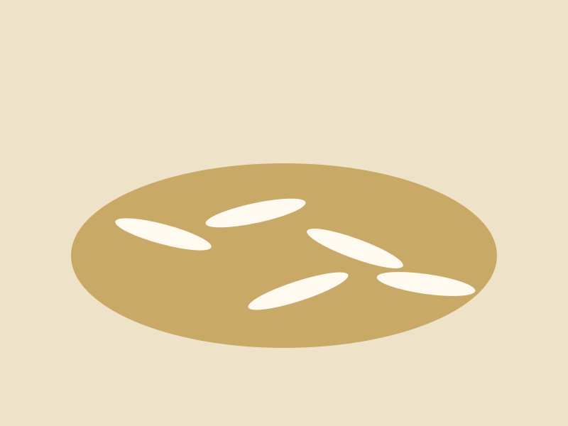

1121 & premium varieties
Extra-long grain options available in white, steam and sella specifications.
View basmati range →Kassam Trading Company is a family-owned rice miller, processor and exporter founded in Karachi in 1999. We help importers, distributors and food businesses source dependable rice with clear specifications and export-ready support.
KTC works across milling, processing, packing and export coordination so buyers can manage their sourcing through one experienced partner.


Extra-long grain options available in white, steam and sella specifications.
View basmati range →
Versatile rice options developed for high-volume and value-focused markets.
View non-basmati range →
Bulk and packaged supply options can be discussed for qualified enquiries.
Send an enquiry →Clear, practical communication about grades, packing, documentation and timelines.
Options suited to importers, wholesalers, distributors and private-label customers.
Processing and inspection support designed around agreed product specifications.
Assistance with shipment documentation and third-party inspection coordination.